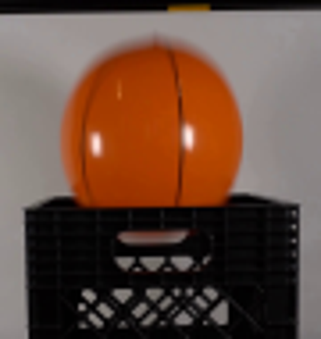
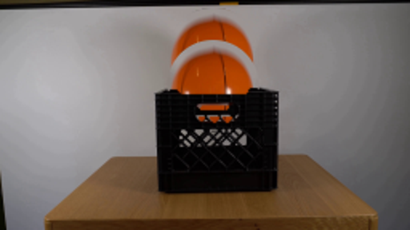
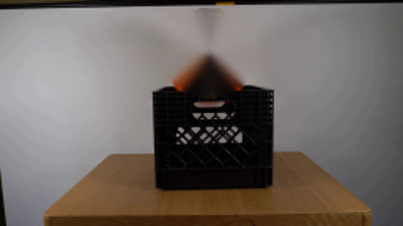
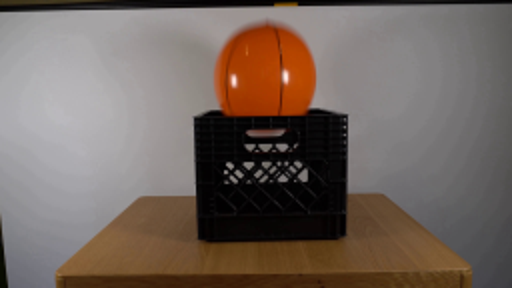
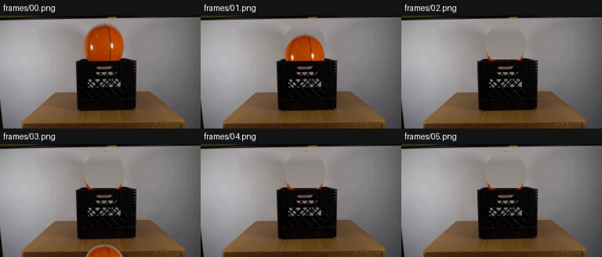
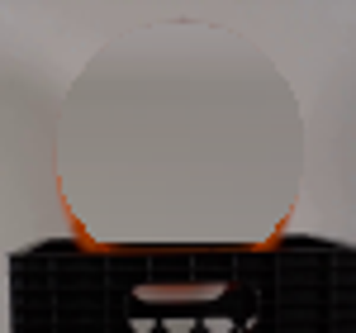
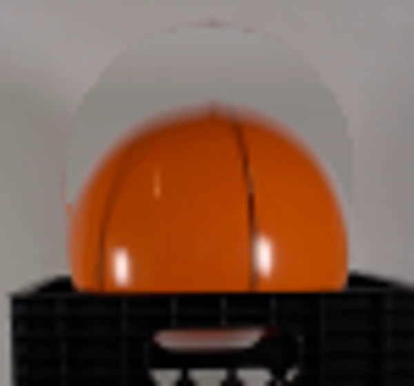
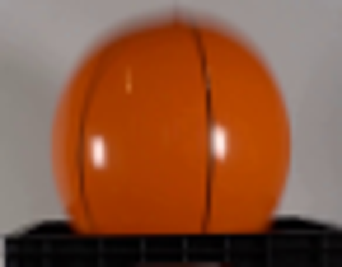
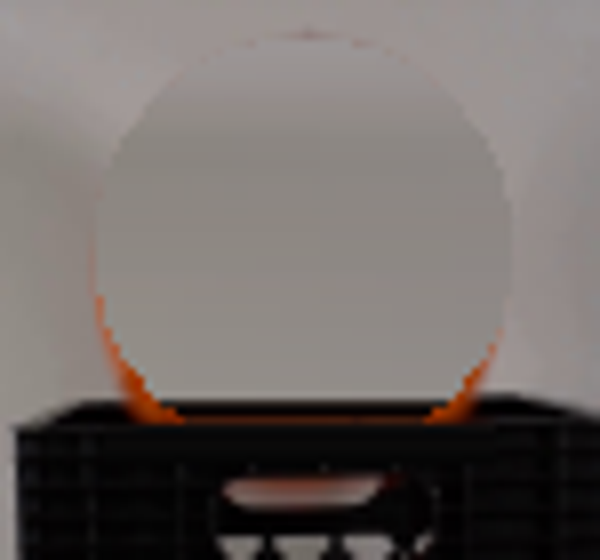
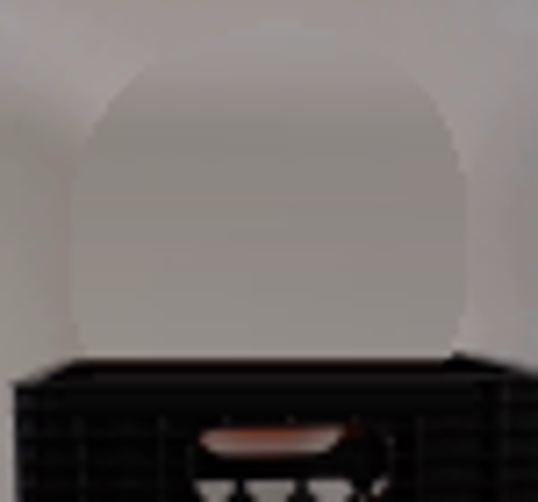

CODING AGENTS AS PIXEL WORLD MODELS
traex/DeepSeek-V4.1-Flash · 0014
点击播放 · 原生 RGB 像素
逐轮保存的候选
回放视频、检查图与代码变化。
每份候选均可单独播放。实际图片检查记录在下方工具轨迹中。
候选 01播放与检查图
点击播放 · 原生 RGB 像素
展开代码变化
--- 上一保存版本
+++ 本次保存版本
@@ -0,0 +1,112 @@
+from pathlib import Path
+
+import cv2
+import numpy as np
+from PIL import Image
+
+import artifact_io
+
+
+CASE_DIR = Path(__file__).resolve().parent
+FRAME_COUNT = 20
+FPS = 4
+
+BALL_CX = 132.5
+BALL_CY = 35.5
+BALL_RX = 25.8
+BALL_RY = 25.8
+FRONT_RIM_Y = 58.0
+
+
+def ellipse_alpha(cx, cy, rx, ry, width, height):
+ yy, xx = np.mgrid[:height, :width]
+ normalized = ((xx - cx) / rx) ** 2 + ((yy - cy) / ry) ** 2
+ distance = (1.0 - np.sqrt(normalized)) * min(rx, ry)
+ return np.clip(distance + 0.5, 0.0, 1.0).astype(np.float32)
+
+
+def build_clean_plate(frame, alpha):
+ mask = (alpha > 0.02).astype(np.uint8) * 255
+ bgr = cv2.cvtColor(frame, cv2.COLOR_RGB2BGR)
+ inpainted = cv2.inpaint(bgr, mask, 6, cv2.INPAINT_TELEA)
+ plate = cv2.cvtColor(inpainted, cv2.COLOR_BGR2RGB)
+
+ # The wall is nearly flat behind the ball. A restrained horizontal
+ # interpolation keeps newly exposed pixels clean instead of retaining
+ # color bled down from the crate rim.
+ for y in range(7, 56):
+ left = np.median(frame[y, 90:101], axis=0)
+ right = np.median(frame[y, 165:176], axis=0)
+ span = np.linspace(0.0, 1.0, 101, dtype=np.float32)[:, None]
+ row = left[None, :] * (1.0 - span) + right[None, :] * span
+ plate[y, 101:202] = row
+
+ return plate
+
+
+def crate_foreground_mask(frame):
+ height, width = frame.shape[:2]
+ mask = np.zeros((height, width), dtype=np.float32)
+ mask[int(np.ceil(FRONT_RIM_Y)) : 119, 95:169] = 1.0
+
+ # Keep the actual top edge on the side rails, while using a clean
+ # horizontal front-rim edge where the ball originally covered it.
+ top = int(np.floor(FRONT_RIM_Y))
+ if top > 0:
+ mask[top - 1, 95:169] = 0.35
+ return mask
+
+
+def render_frames(first_frame):
+ height, width = first_frame.shape[:2]
+ alpha = ellipse_alpha(BALL_CX, BALL_CY, BALL_RX, BALL_RY, width, height)
+ plate = build_clean_plate(first_frame, alpha)
+ crate_mask = crate_foreground_mask(first_frame)
+
+ sprite = first_frame.astype(np.float32)
+ base = first_frame.copy()
+ base[alpha > 0.02] = plate[alpha > 0.02]
+
+ frames = []
+ for index in range(FRAME_COUNT):
+ if index == 0:
+ frames.append(first_frame.copy())
+ continue
+
+ time_s = index / FPS
+ offset_y = int(round(0.5 * 420.0 * time_s * time_s))
+
+ shifted_alpha = np.zeros((height, width), dtype=np.float32)
+ shifted_rgb = np.zeros((height, width, 3), dtype=np.float32)
+ if offset_y < height:
+ shifted_alpha[offset_y:] = alpha[: height - offset_y]
+ shifted_rgb[offset_y:] = sprite[: height - offset_y]
+
+ frame = base.astype(np.float32)
+ frame = (
+ shifted_rgb * shifted_alpha[:, :, None]
+ + frame * (1.0 - shifted_alpha[:, :, None])
+ )
+
+ # The crate front rim and wall are a fixed foreground layer.
+ frame = (
+ first_frame.astype(np.float32) * crate_mask[:, :, None]
+ + frame * (1.0 - crate_mask[:, :, None])
+ )
+ frames.append(np.clip(np.rint(frame), 0, 255).astype(np.uint8))
+
+ return np.stack(frames)
+
+
+def main():
+ first_frame = np.asarray(Image.open(CASE_DIR / "first_frame.png").convert("RGB"))
+ assert first_frame.shape == (144, 256, 3)
+ frames = render_frames(first_frame)
+ assert frames.shape == (FRAME_COUNT, 144, 256, 3)
+ assert frames.dtype == np.uint8
+ assert np.array_equal(frames[0], first_frame)
+ artifact_io.save(frames, CASE_DIR)
+
+
+if __name__ == "__main__":
+ main()
候选 02播放与检查图
点击播放 · 原生 RGB 像素
展开代码变化
--- 上一保存版本
+++ 本次保存版本
@@ -41,11 +41,29 @@
row = left[None, :] * (1.0 - span) + right[None, :] * span
plate[y, 101:202] = row
+ # The ball hides the dark back edge of the crate's opening. Reconstruct
+ # that narrow strip from the unobscured rim on either side.
+ for y in range(55, 58):
+ side = frame[y, np.r_[100:111, 155:166]].astype(np.float32)
+ dark = side[side.mean(axis=1) < 100]
+ color = np.median(dark, axis=0) if len(dark) else np.array([10, 8, 8])
+ plate[y, 104:161] = color
+
return plate
-def crate_foreground_mask(frame):
- height, width = frame.shape[:2]
+def build_crate_plate(frame):
+ crate_plate = frame.copy()
+ for y in range(58, 63):
+ side = frame[y, np.r_[100:111, 155:166]].astype(np.float32)
+ dark = side[side.mean(axis=1) < 100]
+ color = np.median(dark, axis=0) if len(dark) else np.array([8, 6, 7])
+ crate_plate[y, 108:157] = color
+ return crate_plate
+
+
+def crate_foreground_mask():
+ height, width = 144, 256
mask = np.zeros((height, width), dtype=np.float32)
mask[int(np.ceil(FRONT_RIM_Y)) : 119, 95:169] = 1.0
@@ -61,7 +79,8 @@
height, width = first_frame.shape[:2]
alpha = ellipse_alpha(BALL_CX, BALL_CY, BALL_RX, BALL_RY, width, height)
plate = build_clean_plate(first_frame, alpha)
- crate_mask = crate_foreground_mask(first_frame)
+ crate_plate = build_crate_plate(first_frame)
+ crate_mask = crate_foreground_mask()
sprite = first_frame.astype(np.float32)
base = first_frame.copy()
@@ -90,7 +109,7 @@
# The crate front rim and wall are a fixed foreground layer.
frame = (
- first_frame.astype(np.float32) * crate_mask[:, :, None]
+ crate_plate.astype(np.float32) * crate_mask[:, :, None]
+ frame * (1.0 - crate_mask[:, :, None])
)
frames.append(np.clip(np.rint(frame), 0, 255).astype(np.uint8))

候选 04播放与检查图
点击播放 · 原生 RGB 像素

展开代码变化
--- 上一保存版本
+++ 本次保存版本
@@ -54,11 +54,11 @@
def build_crate_plate(frame):
crate_plate = frame.copy()
- for y in range(58, 63):
+ for y in range(55, 63):
side = frame[y, np.r_[100:111, 155:166]].astype(np.float32)
dark = side[side.mean(axis=1) < 100]
color = np.median(dark, axis=0) if len(dark) else np.array([8, 6, 7])
- crate_plate[y, 108:157] = color
+ crate_plate[y, 104:161] = color
return crate_plate
@@ -84,7 +84,16 @@
sprite = first_frame.astype(np.float32)
base = first_frame.copy()
- base[alpha > 0.02] = plate[alpha > 0.02]
+ red, green, blue = [first_frame[:, :, channel] for channel in range(3)]
+ orange_fringe = (
+ (red > 75)
+ & (red > green * 1.22)
+ & (red > blue * 1.12)
+ & (np.indices((height, width))[0] < 58)
+ ).astype(np.uint8)
+ orange_fringe = cv2.dilate(orange_fringe, np.ones((5, 5), np.uint8)).astype(bool)
+ remove_ball = (alpha > 0.02) | orange_fringe
+ base[remove_ball] = plate[remove_ball]
frames = []
for index in range(FRAME_COUNT):
候选 05播放与检查图
候选 06播放与检查图
点击播放 · 原生 RGB 像素

展开代码变化
--- 上一保存版本
+++ 本次保存版本
@@ -40,6 +40,7 @@
span = np.linspace(0.0, 1.0, 101, dtype=np.float32)[:, None]
row = left[None, :] * (1.0 - span) + right[None, :] * span
plate[y, 101:202] = row
+ plate[0:3, 125:157] = np.median(frame[0:3, 90:110], axis=(0, 1))
# The ball hides the dark back edge of the crate's opening. Reconstruct
# that narrow strip from the unobscured rim on either side.
候选 07播放与检查图
可观测工具轨迹
实际执行的命令与返回图片。
命令 1exit 0
/bin/bash -c "pwd && rg --files -g 'prompt.txt' -g 'GENERATION_RULES.md' -g '*.py' -g '*.md' | sed -n '1,120p'"
命令 2exit 0
/bin/bash -c "ls -la && find . -maxdepth 2 -type f -printf '%p %s bytes\\n' | sort | sed -n '1,160p'"
命令 3exit 0
/bin/bash -c 'cat prompt.txt'
命令 4exit 0
/bin/bash -c 'cat GENERATION_RULES.md'
命令 5exit 0
/bin/bash -c "sed -n '1,240p' artifact_io.py"
命令 6exit 0
/bin/bash -c "python - <<'PY'
from PIL import Image
im=Image.open('first_frame.png')
im.crop((90,0,180,95)).resize((540,570)).save('.tmp/ball_crate_crop.png')
print(im.size)
PY"命令 7exit 0
/bin/bash -c "python - <<'PY'
try:
import cv2; print('cv2',cv2.__version__)
except Exception as e: print('no cv2',e)
try:
import scipy; print('scipy',scipy.__version__)
except Exception as e: print('no scipy',e)
PY"命令 8exit 0
/bin/bash -c "python - <<'PY'
from PIL import Image
import numpy as np
im=np.array(Image.open('first_frame.png').convert('RGB'))
# orange candidate stats in ball ROI
roi=im[10:80,90:175]
r,g,b=roi[:,:,0],roi[:,:,1],roi[:,:,2]
mask=(r>120)&(r>g*1.45)&(g>b*1.15)
y,x=np.where(mask)
print('orange count',len(x),'bbox local',x.min(),x.max(),y.min(),y.max())
print('global bbox',x.min()+90,x.max()+90,y.min()+10,y.max()+10)
# print color samples
for yy in [18,25,40,55,65,72]:
print(yy, [im[yy,xx].tolist() for xx in [103,105,115,132,150,159,161]])
PY"命令 9exit 0
/bin/bash -c "python - <<'PY'
from PIL import Image
import numpy as np
im=np.array(Image.open('first_frame.png').convert('RGB'))
# masks: orange excluding seam; black crate. print row extents around ball
for y in range(8,62,2):
row=im[y]
m=(row[:,0]>110)&(row[:,0]>row[:,1]*1.35)&(row[:,0]>row[:,2]*1.15)
xs=np.where(m)[0]
if len(xs): print(y, xs.min(),xs.max(),len(xs))
PY"命令 10exit 0
/bin/bash -c "python - <<'PY'
from PIL import Image
import numpy as np
im=np.array(Image.open('first_frame.png').convert('RGB'))
for x in [108,115,125,132,140,150,156]:
print('\\nx',x)
for y in range(45,68):
print(y, tuple(im[y,x]), end='; ')
print()
PY"命令 11exit 0
/bin/bash -c "python - <<'PY'
from PIL import Image
import numpy as np
im=np.array(Image.open('first_frame.png').convert('RGB'))
# row stats edge positions from color boundary with simple neighbor gradient
for y in range(10,60,4):
print('row',y, ' '.join(f'{x}:{tuple(im[y,x])}' for x in range(100,166,5)))
PY"命令 12exit 0
/bin/bash -c "python - <<'PY'
import cv2, numpy as np
from PIL import Image
im=cv2.cvtColor(cv2.imread('first_frame.png'),cv2.COLOR_BGR2RGB)
h,w=im.shape[:2]
yy,xx=np.mgrid[:h,:w]
cx,cy,r=132.6,33.2,28.0
ball=np.clip(r+1.2-np.hypot(xx-cx,yy-cy),0,1)
mask=(ball>0).astype(np.uint8)*255
plate=cv2.inpaint(cv2.cvtColor(im,cv2.COLOR_RGB2BGR),mask,5,cv2.INPAINT_TELEA)
plate=cv2.cvtColor(plate,cv2.COLOR_BGR2RGB)
# crate dark mask based on luminance
lum=im.astype(np.float32)@np.array([.299,.587,.114])
roi=np.zeros((h,w),bool); roi[53:119,95:169]=True
# exclude ball pixels above 54
crate=((lum<78)&roi).astype(np.uint8)*255
# remove ball-orange from crate mask
orange=((im[:,:,0]>65)&(im[:,:,0]>im[:,:,1]*1.5)&(im[:,:,0]>im[:,:,2]*1.4))
crate[orange]=0
crate=cv2.morphologyEx(crate,cv2.MORPH_CLOSE,np.ones((2,2),np.uint8))
# feather
crate_a=cv2.GaussianBlur(crate.astype(np.float32)/255,(3,3),.5)
# visualize
prev=np.zeros_like(im)
prev[:]=im
# erase ball footprint with plate
a=ball[:,:,None]
prev=(im.astype(float)*a+plate.astype(float)*(1-a)).astype(np.uint8)
# paste a test ball at y+20 then overlay crate
sp=im[3:64,101:164]
sa=ball[3:64,101:164]
can=prev.copy()
y0,x0=23,101
region=can[y0:y0+sp.shape[0],x0:x0+sp.shape[1]]
region[:]=(sp.astype(float)*sa[:,:,None]+region.astype(float)*(1-sa[:,:,None])).astype(np.uint8)
region[:]=(im[y0:y0+sp.shape[0],x0:x0+sp.shape[1]].astype(float)*crate_a[y0:y0+sp.shape[0],x0:x0+sp.shape[1],None]+region.astype(float)*(1-crate_a[y0:y0+sp.shape[0],x0:x0+sp.shape[1],None])).astype(np.uint8)
Image.fromarray(im).resize((512,288)).save('.tmp/orig2x.png')
Image.fromarray(plate).resize((512,288)).save('.tmp/plate2x.png')
Image.fromarray((crate_a*255).astype(np.uint8)).save('.tmp/crate_mask.png')
Image.fromarray(can).resize((512,288)).save('.tmp/test_ball20.png')
PY"命令 13exit 0
/bin/bash -c "python - <<'PY'
import cv2,numpy as np
from PIL import Image
im=np.array(Image.open('first_frame.png').convert('RGB'))
r,g,b=im[:,:,0],im[:,:,1],im[:,:,2]
m=((r>110)&(r>g*1.35)&(r>b*1.15)).astype(np.uint8)
m=cv2.morphologyEx(m,cv2.MORPH_CLOSE,np.ones((3,3),np.uint8))
cs,_=cv2.findContours(m,cv2.RETR_EXTERNAL,cv2.CHAIN_APPROX_NONE)
c=max(cs,key=cv2.contourArea)
print(cv2.fitEllipse(c))
print(cv2.boundingRect(c))
# edge gradient radial estimate? print mask rows and extents
for y in [10,11,12,13,14,15,20,25,30,35,40,45,50,55,56,57,58]:
xs=np.where(m[y]>0)[0]
if len(xs): print(y,xs.min(),xs.max())
PY"命令 14exit 0
/bin/bash -c "python - <<'PY'
from PIL import Image
import numpy as np
im=np.array(Image.open('first_frame.png').convert('RGB')).astype(np.float32)
# fit circle to orange boundary excluding bottom occlusion y>=56, using radial scans thresholds not crucial
ys=[]
for y in range(10,58):
row=im[y]
# chroma distance: orange score r-g
score=row[:,0]-row[:,1]
xs=np.where(score>30)[0]
xs=xs[(xs>95)&(xs<175)]
if len(xs): ys.append((y,xs.min(),xs.max()))
# fit circle x extrema gives cy. Rows extents should satisfy (x-cx)"'^2+(y-cy)''^2=r''^2. optimize cx cy r via scipy least_squares midpoint extents
from scipy.optimize import least_squares
pts=[]
for y,x0,x1 in ys:
pts.extend([(x0,y),(x1,y)])
pts=np.array(pts,float)
def fun(p):
cx,cy,r=p
return np.hypot(pts[:,0]-cx,pts[:,1]-cy)-r
res=least_squares(fun,[132.5,34,28],loss='"'soft_l1',f_scale=1.0)
print(res.x, np.percentile(np.abs(fun(res.x)),[50,75,90,95,99]))
PY"命令 15exit 1
/bin/bash -c 'python generate.py'
命令 16exit 1
/bin/bash -c 'python generate.py'
命令 17exit 0
/bin/bash -c "python generate.py && python - <<'PY'
from PIL import Image
import numpy as np
im=np.array(Image.open('first_frame.png').convert('RGB'))
out=np.array(Image.open('frames/00.png').convert('RGB'))
print('frame0 exact',np.array_equal(im,out))
print('frames',len(list(__import__('pathlib').Path('frames').glob('*.png'))))
PY"命令 18exit 0
/bin/bash -c "python - <<'PY'
from PIL import Image,ImageDraw
files=[f'frames/{i:02d}.png' for i in range(6)]
out=Image.new('RGB',(256*3,(144+20)*2),(20,20,20))
d=ImageDraw.Draw(out)
for i,f in enumerate(files):
im=Image.open(f)
x=(i%3)*256;y=(i//3)*164
out.paste(im,(x,y+20)); d.text((x+4,y+4),f,fill='white')
out.resize((1536,656)).save('.tmp/first6.png')
PY"命令 19exit 0
/bin/bash -c "python - <<'PY'
from PIL import Image
import numpy as np
for i in range(6):
im=np.array(Image.open(f'frames/{i:02d}.png'))
# ball orange pixels above front rim and total
r,g,b=im[:,:,0],im[:,:,1],im[:,:,2]
m=(r>100)&(r>g*1.3)&(r>b*1.1)
print(i, int(m[:58].sum()), int(m.sum()), tuple(im[30,132]))
PY"命令 20exit 0
/bin/bash -c "python - <<'PY'
from PIL import Image
import numpy as np
im=np.array(Image.open('frames/02.png'))
r,g,b=im[:,:,0],im[:,:,1],im[:,:,2]
m=(r>100)&(r>g*1.3)&(r>b*1.1)
y,x=np.where(m[:58])
print(list(zip(x[:100],y[:100])))
Image.fromarray(im[5:75,95:170]).resize((600,560)).save('.tmp/frame02_crop.png')
PY"命令 21exit 0
/bin/bash -c "python - <<'PY'
from PIL import Image
import numpy as np
im=np.array(Image.open('frames/01.png'))
Image.fromarray(im[5:75,95:170]).resize((600,560)).save('.tmp/frame01_crop.png')
PY"命令 22exit 0
/bin/bash -c "python - <<'PY'
from PIL import Image
import numpy as np
for i in [0,1,2]:
im=np.array(Image.open(f'frames/{i:02d}.png'))
Image.fromarray(im[8:65,96:169]).resize((584,456)).save(f'.tmp/crop{i}.png')
PY"命令 23exit 0
/bin/bash -c "sed -n '1,240p' generate.py && git status --short 2>/dev/null || true"
命令 24exit 0
/bin/bash -c "python - <<'PY'
from PIL import Image
import numpy as np
im=np.array(Image.open('first_frame.png').convert('RGB'))
for y in range(53,63):
vals=[]
for x in [88,92,96,100,104,108,112,116,120,124,128,132,136,140,144,148,152,156,160,164,168,172,176]:
c=im[y,x]; vals.append(f'{x}:{c[0]},{c[1]},{c[2]}')
print('y',y,' '.join(vals))
PY"命令 25exit 0
/bin/bash -c "python - <<'PY'
from PIL import Image
import numpy as np
im=np.array(Image.open('frames/05.png').convert('RGB'))
# difference from frame0 identify changes
im0=np.array(Image.open('frames/00.png').convert('RGB'))
d=np.max(np.abs(im.astype(int)-im0.astype(int)),axis=2)
print('changed',np.sum(d>4),'bbox',np.where(d>4)[1].min(),np.where(d>4)[1].max(),np.where(d>4)[0].min(),np.where(d>4)[0].max())
# changed pixels rows/cols count
for y in range(0,144):
n=np.sum(d[y]>4)
if n: print(y,n)
PY"命令 26exit 0
/bin/bash -c "python - <<'PY'
import numpy as np
from PIL import Image
im=np.array(Image.open('frames/05.png').convert('RGB'))
im0=np.array(Image.open('frames/00.png').convert('RGB'))
d=np.max(np.abs(im.astype(int)-im0.astype(int)),axis=2)
Image.fromarray(np.clip(d*8,0,255).astype(np.uint8)).resize((1024,576)).save('.tmp/diff05.png')
# print changed pixel color positions rows
for y in [10,11,12,13,14,20,30,40,50,55,56,57]:
xs=np.where(d[y]>4)[0]
print(y,xs.min() if len(xs) else None,xs.max() if len(xs) else None, [tuple(im[y,x]) for x in xs[::max(1,len(xs)//8)]][:8])
PY"命令 27exit 1
/bin/bash -c "python generate.py && python - <<'PY'
from PIL import Image
import numpy as np
im=np.array(Image.open('frames/05.png').convert('RGB'))
r,g,b=im[:,:,0],im[:,:,1],im[:,:,2]
m=(r>100)&(r>g*1.3)&(r>b*1.1)
print('orange pixels above rim',int(m[:58].sum()))
Image.fromarray(im[5:75,95:170]).resize((600,560)).save('.tmp/final_frame05_crop.png')
PY"命令 28exit 0
/bin/bash -c "python generate.py && python - <<'PY'
from PIL import Image
import numpy as np
im=np.array(Image.open('frames/05.png').convert('RGB'))
r,g,b=im[:,:,0],im[:,:,1],im[:,:,2]
m=(r>100)&(r>g*1.3)&(r>b*1.1)
print('orange pixels above rim',int(m[:58].sum()))
Image.fromarray(im[5:75,95:170]).resize((600,560)).save('.tmp/final_frame05_crop.png')
PY"命令 29exit 0
/bin/bash -c "python - <<'PY'
from PIL import Image
import numpy as np
im=np.array(Image.open('frames/05.png').convert('RGB'))
r,g,b=im[:,:,0],im[:,:,1],im[:,:,2]
m=(r>100)&(r>g*1.3)&(r>b*1.1)
y,x=np.where(m[:58])
from collections import Counter
print('bbox',x.min(),x.max(),y.min(),y.max())
print('rows',Counter(y))
for yy in sorted(set(y)):
print(yy, [(int(xx),tuple(map(int,im[yy,xx]))) for xx in x[y==yy]])
PY"命令 30exit 0
/bin/bash -c "python generate.py && python - <<'PY'
from PIL import Image
import numpy as np
for i in [1,2,5,19]:
im=np.array(Image.open(f'frames/{i:02d}.png').convert('RGB'))
r,g,b=im[:,:,0],im[:,:,1],im[:,:,2]
m=(r>90)&(r>g*1.3)&(r>b*1.12)&(np.indices(r.shape)[0]<58)
print(i,int(m.sum()))
Image.fromarray(np.array(Image.open('frames/05.png').convert('RGB'))[5:75,95:170]).resize((600,560)).save('.tmp/final2_frame05_crop.png')
PY"命令 31exit 0
/bin/bash -c "python - <<'PY'
from PIL import Image
import numpy as np
im=np.array(Image.open('first_frame.png').convert('RGB'))
for y in range(0,10):
print(y,[tuple(map(int,im[y,x])) for x in range(134,151,2)])
PY"命令 32exit 0
/bin/bash -c "python - <<'PY'
from PIL import Image
import numpy as np
for i in [2,5,19]:
im=np.array(Image.open(f'frames/{i:02d}.png').convert('RGB'))
r,g,b=im[:,:,0],im[:,:,1],im[:,:,2]
m=(r>90)&(r>g*1.3)&(r>b*1.12)&(np.indices(r.shape)[0]<58)
y,x=np.where(m)
print(i,list(zip(x,y)))
PY"命令 33exit 0
/bin/bash -c "python - <<'PY'
from PIL import Image
import numpy as np
im=np.array(Image.open('first_frame.png').convert('RGB'))
for y in [58,59,60,61,62]:
print('row',y,'dark med',np.median(im[y,100:160][im[y,100:160].mean(1)<100],axis=0))
PY"命令 34exit 0
/bin/bash -c "python - <<'PY'
from PIL import Image
import numpy as np
im=np.array(Image.open('first_frame.png').convert('RGB'))
for y in [0,1,2,3,4]:
print(y,[tuple(map(int,im[y,x])) for x in range(125,157,2)])
PY"命令 35exit 0
/bin/bash -c "python - <<'PY'
from PIL import Image
import numpy as np
im=np.array(Image.open('first_frame.png').convert('RGB'))
# crate object starts x~95? check object boundary at rows
for y in [56,57,58,59,60,61,62,63,70,100,115,116,117,118,119,120]:
row=im[y].mean(1)
xs=np.where(row<70)[0]
# contiguous segments
seg=[]
if len(xs):
starts=xs[np.r_[True,np.diff(xs)>1]]; ends=xs[np.r_[np.diff(xs)>1,True]]
seg=list(zip(starts,ends))
print(y,seg)
PY"命令 36exit 0
/bin/bash -c "python - <<'PY'
from PIL import Image
import numpy as np
im=np.array(Image.open('first_frame.png').convert('RGB'))
for y in range(55,60):
print(y,[(x,tuple(map(int,im[y,x]))) for x in range(94,180) if im[y,x].mean()<80][:12])
PY"命令 37exit 0
/bin/bash -c "python generate.py && python - <<'PY'
from pathlib import Path
from PIL import Image
import numpy as np
import json
frames=[np.array(Image.open(p).convert('RGB')) for p in sorted(Path('frames').glob('*.png'))]
a=np.stack(frames)
first=np.array(Image.open('first_frame.png').convert('RGB'))
print('shape',a.shape,'dtype',a.dtype,'frame0 exact',np.array_equal(a[0],first))
print('changed later frames', [int(np.any(a[i]"'!=a[0],axis=2).sum()) for i in range(1,6)])
print('"'files',[(p.name,p.stat().st_size) for p in [Path('pixels.npz'),Path('index.html'),Path('inspection.png'),Path('transition_check.png')]])
with np.load('pixels.npz') as z: print('npz',z['pixels'].shape,z['pixels'].dtype)
PY"命令 38exit 0
/bin/bash -c "python - <<'PY'
import json,re
from pathlib import Path
s=Path('index.html').read_text()
m=re.search(r'const DATA = (.*?);\\s*\\n',s)
print('payload match',bool(m))
if m:
d=json.loads(m.group(1))
print({k:(len(v) if isinstance(v,(list,str)) else v) for k,v in d.items() if k not in ('first','deltas')})
print('first chars',len(d['first']),'deltas',len(d['deltas']),'delta lengths',[len(x) for x in d['deltas'][:6]])
PY"命令 39exit 0
/bin/bash -c "sed -n '1,180p' player_template.html"
命令 40exit 1
/bin/bash -c "python - <<'PY'
import json,re,base64,numpy as np
from pathlib import Path
s=Path('index.html').read_text()
m=re.search(r\"const DATA=(\\{.*?\\}),W=DATA\",s)
print('payload match',bool(m))
d=json.loads(m.group(1))
print('meta',d['width'],d['height'],d['frames'],d['fps'],'deltas',len(d['deltas']))
raw=base64.b64decode(d['first']); pix=np.frombuffer(raw,dtype='<u4').reshape(144,256)
ref=np.array(__import__('PIL').Image.open('first_frame.png').convert('RGB'))
packed=(ref[:,:,0].astype(np.uint32)<<16)|(ref[:,:,1].astype(np.uint32)<<8)|ref[:,:,2]
print('payload frame0 exact',np.array_equal(pix,packed))
PY"命令 41exit 0
/bin/bash -c "python - <<'PY'
import json,re,base64,numpy as np
from pathlib import Path
from PIL import Image
s=Path('index.html').read_text()
d=json.loads(re.search(r\"const DATA=(\\{.*?\\}),W=DATA\",s).group(1))
pix=np.frombuffer(base64.b64decode(d['first']),dtype='<u4').reshape(144,256)
ref=np.array(Image.open('first_frame.png').convert('RGB'))
packed=(ref[:,:,0].astype(np.uint32)<<16)|(ref[:,:,1].astype(np.uint32)<<8)|ref[:,:,2]
print('payload frame0 exact',np.array_equal(pix,packed))
# Reconstruct every delta and compare to PNG frames
frames=[pix.copy()]
for encoded in d['deltas']:
f=frames[-1].copy(); p=np.frombuffer(base64.b64decode(encoded),dtype='<u4')
i=0
while i<len(p):
start=int(p[i]); count=int(p[i+1]); f.reshape(-1)[start:start+count]=p[i+2:i+2+count]; i+=2+count
frames.append(f)
ok=True
for i,f in enumerate(frames):
rgb=np.stack([(f>>16)&255,(f>>8)&255,f&255],axis=2).astype(np.uint8)
ref=np.array(Image.open(f'frames/{i:02d}.png').convert('RGB'))
ok &= np.array_equal(rgb,ref)
print('all payload frames exact',ok)
PY"视觉工具实际返回图片 1

视觉工具实际返回图片 2

视觉工具实际返回图片 3

视觉工具实际返回图片 4
视觉工具实际返回图片 5

视觉工具实际返回图片 6

视觉工具实际返回图片 7

视觉工具实际返回图片 8

视觉工具实际返回图片 9

视觉工具实际返回图片 10

视觉工具实际返回图片 11

视觉工具实际返回图片 12

视觉工具实际返回图片 13

视觉工具实际返回图片 14

视觉工具实际返回图片 15
保存候选 7 份；完成命令 41 次；可验证图片返回 15 张。原始 API 响应与完整日志保留在本地。